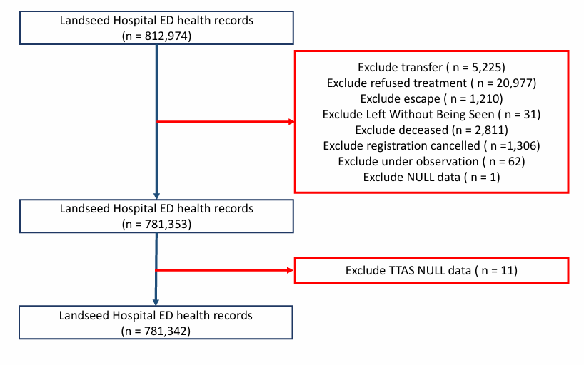
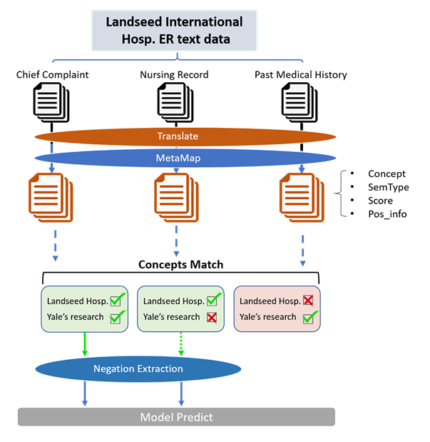

Integrating Local and Global Clinical Concepts via Semantic Mapping with MetaMap
for Translated Chinese Emergency Department Texts: Disposition Prediction
時間：2024/3 ~ 2025/8
急診壅塞是常見問題，TTAS 檢傷分級在病人剛到院時仍高度仰賴護理師臨床經驗判斷。
本研究希望結合結構化數據與非結構化臨床文本，建立輔助預測模型—加入篩選後的文本特徵，模型 AUC 從 0.8058 提升至 0.8829（+0.077，相對改善約 9.6%）。
- 清理並處理急診院內 810,000+ 資料集，聚焦住院／出院二分類任務
- 使用 MetaMap 進行醫療概念抽取，將不同措辭（如 abdominal pain／stomach pain／AP）映射為標準化概念
- 參考 Yale 研究的 900 項症狀特徵，篩選出與急診預測相關的 1,215 維臨床特徵
- 設計三分類否定語意編碼，結合 NegEx 判斷症狀是否被否定
- 選用 Random Forest 建模，兼顧非線性關係處理與可解釋性
- 比較不同文本來源，發現護理紀錄對預測結果影響最大
模型選型與否定語意編碼
選擇 Random Forest 是因為資料已轉換為結構化 Feature，該模型能處理非線性關係，並提供 Feature Importance 提升可解釋性。針對否定語意（例如「有 fever，但否認 cough」），設計三分類編碼：Fever = 1、Cough = -1，區分「提及」與「提及但否定」兩種截然不同的臨床意義。
特徵選擇：從 36,130 個 Concept 收斂到 1,215 個
MetaMap 擷取出的 Concept 數量龐大，但並非都與急診預測相關，因此把 Yale 文獻整理的 900 個關鍵特徵一併映射進同一概念空間比對：兩邊都有的全數採用，只有自己資料獨有的則再用 semantic type 與詞頻兩層篩選。特徵數因此從 36,130 個收斂到實際使用的 1,215 個，證明醫療自由文本裡有生理數值抓不到的臨床訊號。
圖示（Figures）

圖 1：資料清理（Data Cleaning）

圖 2：Workflow
Technical Stack
Python
Machine Learning
MetaMap
NegEx
NLP
Random Forest
Data Cleaning
Feature Engineering
Feature Importance
Cross-Validation
返回主頁